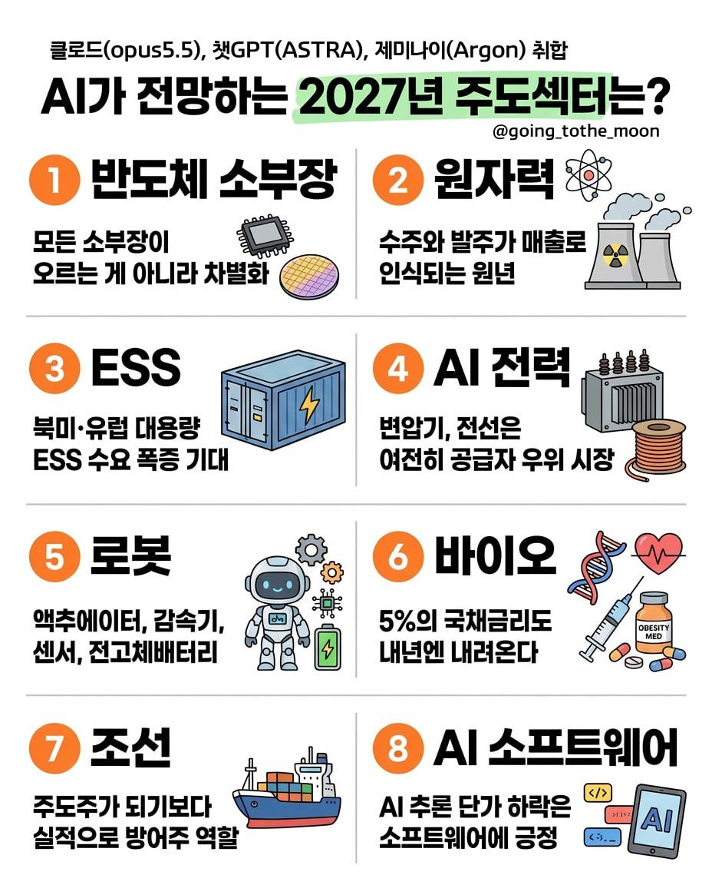
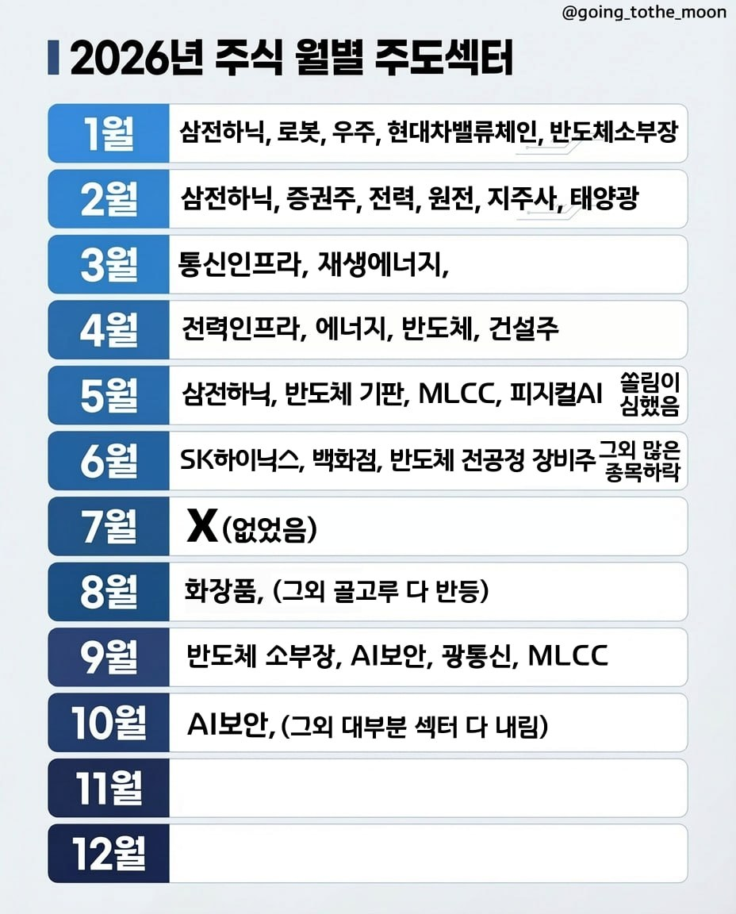

관심종목
🔭 AI 가 전망하는 2027년 주도섹터 클로드·챗GPT·제미나이 취합 (@going_tothe_moon) · 참고용


이번 분기 실적발표 쉬운 요약 · 예상 대비 실적 · 앞으로 30일 실적발표·컨퍼런스콜 일정이에요. 첫 줄에서 보유 · 관심 · 공동자산, 둘째 줄에서 전체 · 한국 · 미국. 종목 이름을 누르면 상세 화면.
보유·관심 종목과 관련된 산업 데이터를 날마다 쌓아서 봐요.

✏️ 선 그은 차트 → 🗺 시장 그룹판(한국·🪜 와인스타인 4단계·미국 · AI 인프라 200일선) → 🔭 차트 스캔 → 📈 주봉 정배열 → 📚 차트 공부 · 참고용 (매수·매도 추천 아님)
종목마다 스스로 답할 수 있어야 하는 질문 5개예요. 종목을 누르면 빈칸이 열려요 · 적은 답은 이 기기(브라우저)에만 저장돼요 · 보유 → 관심 → 공동 순서
"이런 일이 생기면 시장이 이렇게 움직였다" — 과거에 반복된 사건 패턴을 키워드·한 줄로 모아 둔 칸이에요. 누르면 사례·지금 볼 점이 열려요. 최신이 위 · 차트 모양(컵위드핸들·정배열)은 📈 차트 탭 · 과거가 늘 반복되진 않아요 (매수·매도 추천 아님)
같은 업종을 10년 치로 나란히 — 메모리 3사 · 낸드 · 빅테크 CapEx · 클라우드. 달러로 바꾼 숫자는 분기 평균 원/달러 환율 기준이에요.
함께 투자하는 종목이에요. 보유종목과 똑같이 적정주가·분기 실적·실적발표 요약까지 봐요. 종목은 config/stocks.yaml 의 joint 에 넣어요.
보유·관심·공동자산 모든 종목을 한 표에 — 무엇이 적정주가보다 싸고 앞으로 이익이 빨리 크는지 + 매일 바뀐 것 중 가장 중요한 것만 · 매수·매도 추천 아님
오늘·어제·이번 주(7일)에 바뀐 것만 모았어요 — 가장 최신이 위, 같은 날은 보유 → 관심 → 공동 순서. 실적·리포트·공시·수출 숫자와 사이트에 자동으로 반영한 것까지 · 매수·매도 추천 아님
보유·관심 종목과 이어진 수출 숫자예요 — 기관도 개인도 같이 보는 원천 숫자. 1개월 = 11일·21일·1일 잠정 (교보·다올·TRASS-BF 텔레그램 글 자동, 채널끼리 크로스 체크) · 3개월~전체 = 관세청 월별 확정치 · 매수·매도 추천 아님
선거·법·규정·관세, 전쟁·분쟁처럼 업종 전체를 움직이는 정책·지정학 메모예요. 최신이 위 · 맨 아래 📅 정책 일정표 · 매수·매도 추천 아님
코스피·코스닥·삼성전자·SK하이닉스: 지수(주가)가 얼마면 PBR·PER 이 몇 배인지 · 매수·매도 추천 아님
내 엑셀 '점수 체크리스트'를 종목마다 자동으로 계산했어요. 숫자로 매길 수 있는 항목은 자동, 비즈니스 모델처럼 판단이 필요한 항목은 config/checklist.yaml 에 적은 점수를 써요 (비어 있으면 빼고 100점 환산).
① 앞으로 실적(12MF)으로 본 적정주가 Bear · Base · Bull 과 지금 가격 ② 지난 10년 밴드에서 지금 위치, 두 가지로 봐요.